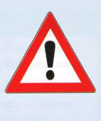

17
Nguy hiểm
A Rơi vào tình thế nguy hiểm
Các binh sĩ were caught napping trước cuộc tấn công bất ngờ. [gặp rắc rối vì họ không chú ý đầy đủ (napping = ngủ)]
Bộ trưởng Bộ Y tế đã mạo hiểm công việc của mình khi going out on a limb và chỉ trích các đề xuất do Thủ tướng đưa ra. [đưa ra ý kiến hoặc làm điều gì đó khác biệt với những người khác. Bạn cũng có thể dùng cụm từ out on a limb, có nghĩa là bạn đơn độc và không có ai hỗ trợ (limb = cành cây lớn)]
Oscar khá yếu đuối và dễ bị người khác led astray. [bị tác động/ảnh hưởng dẫn đến việc làm những điều xấu (astray = đi chệch khỏi con đường chính)]
Tôi sẽ leave well alone nếu tôi là bạn; Jack ghét người khác dọn dẹp giấy tờ của mình. [cố gắng không thay đổi hay cải thiện điều gì đó vì việc này có thể làm cho mọi thứ tồi tệ hơn]
Mặc dù luôn là tình trạng panic stations trước buổi biểu diễn, mọi thứ đều diễn ra suôn sẻ ngay khi tấm màn kéo lên. [thời điểm hoặc tình huống bạn cảm thấy rất lo âu và phải hành động khẩn trương (thân mật)]
Thuế là a necessary evil. [một điều bạn không thích, nhưng chấp nhận rằng nó bắt buộc phải tồn tại hoặc xảy ra]
Ơn giời, bạn đã safe and sound. Tôi đã rất lo lắng cho bạn khi nghe tin về vụ tai nạn. [cụm từ này đơn giản là để nhấn mạnh từ safe]

B Cận kề nguy hiểm
| thành ngữ | ý nghĩa | ví dụ |
|---|---|---|
| have a narrow escape | vừa vặn thoát khỏi hiểm nguy hoặc rắc rối | Phi hành đoàn had a narrow escape khi phi công phải hạ cánh khẩn cấp. |
| do something by the skin of your teeth | chỉ vừa vặn thành công làm một việc gì đó | Chúng tôi đã thắng trận đấu by the skin of our teeth. |
| rather/too close for comfort | quá gần về khoảng cách hoặc quá sát sao về số lượng khiến bạn lo lắng hoặc sợ hãi | Chúng tôi đã chiến thắng trong cuộc bầu cử, nhưng kết quả rather close for comfort. |
| cut things fine | để lại cho mình vừa khít thời gian để làm việc gì đó | Tôi thích đến nhà ga sớm, nhưng Lee luôn cuts things fine. |
| something sets alarm bells ringing | điều gì đó khiến bạn lo lắng vì nó là dấu hiệu cho thấy có thể có sự cố/vấn đề xảy ra | Cái nhìn kỳ lạ mà cô ấy hướng về tôi đã set alarm bells ringing. |
| take your life in(to) your hands | làm một việc cực kỳ mạo hiểm | Bạn đang taking your life into your hands khi băng qua đường ở chỗ này. |
| your life is in someone’s hands | người đó có thể quyết định/ảnh hưởng đến việc bạn sống hay chết | Khi bạn vào bệnh viện, bạn put your life in the hands of strangers. |
| hanging by a thread | có khả năng cao sẽ thất bại/sụp đổ trong tương lai gần | Nền kinh tế đang hanging by a thread. |
| on a knife-edge | trong tình thế cực kỳ khó khăn và đầy lo ngại về tương lai | Doanh nghiệp đang on a financial knife-edge và có thể bị phá sản. |